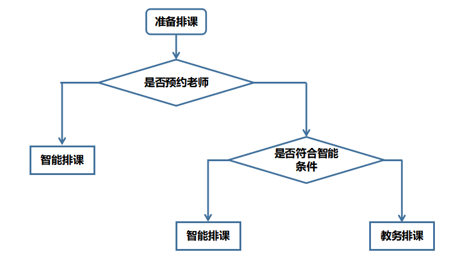

新的智能排课系统
最近上线了新的智能排课系统，大家也开始使用了，新的系统刚上线肯定会在使用过程产生一些问题，或者对功能的一些疑惑，在此，对新系统的内容以及使用过程中常遇到的问题给大家解答一下，希望能够解决大家大部分的问题，也希望大家能够快速适应新排课系统。
当然，我也是才接触这个新系统，可能有些地方也不是很准确，如果大家在使用过程中遇到这里解决不了的问题，请大家在钉钉群“销售后台问题反馈群”里反馈问题，我会随时解答，不在群里的小伙伴找一下身边的同事拉一下群。
更新内容
取消正式课的预约
这次改动最大的就是测评课和正式课统一一个入口了，可能刚开始使用大家觉得有些不适应，或者说迷惑...现在排课首先会使用测评课，当测评课次数用完，继续排课才会排正式课，扣课时。当然了，这其实也是简化大家的操作和对新来的同事减去一些不必要的学习成本，目前会遇到一些问题，之后会越来越好用的！
排课界面优化
之前的排课界面分为两部分，填写信息比较麻烦，现在排课的界面在一个页面展示了！相对之前会方便很多，大家现在都用过了我就不放图了...
测评课排课逻辑
这次新系统最主要的功能就在这，智能排课，会大大减少大家排课等待的时间，也给教务老师减少不少压力。排课逻辑如下：
|--定好老师的情况：自动排课
|--没定好老师的情况
|--符合条件，自动排课
|--不符合条件，教务老师排课
流程图如下：

新系统注意事项
这是大家最近在使用过程中遇到的最多的几个问题，大家可以稍微看看，能避免很多问题！
同时排课的问题
5节测评课之内，可以同时排课，超过5节，一次性只能排1节课，排完老师才能排下1节。(划重点各位，考点)
正式课排课问题
现在只有先排完测评课，才能排正式课，学习力训练课程直接排的是正式课。
“您有待排课的测评课”
这个问题大家遇到的是最平凡的，大家注意一下
5节测评课次数用完之后会有检测机制，如果学生排课列表里有待排课状态的课程，就会有这个提示，仔细检查一下学生的排课列表，将之前的预约课程取消。
（注：之前有很多排课遗留的预约课在学生排课列表的最后，大家有这个问题仔细检查一下）
“已预约某课程测评课，不能在预约”
检查排课列表里是否有该课程未反馈的测评课，反馈一下。
“该老师不教该年级课程”
现在排课细化，老师教什么年级就只能对应学生的年级，不再仅仅是小学，初中，高中。比如：老师信息教授高三年级，学生高一，这样就会有这个提示。如果和老师沟通好的情况下，让老师修改自己的授课年级，再提交排课。
“该老师与科目不符合”
老师信息里设置的授课科目没有提交的课程，和老师沟通好的情况下，让老师改信息，或者和教务老师说一下，让教务老师排课。
“智能排课接口异常”
检查一下教材版本是否正确，如果确定正确，教材版本选择其他，然后手动输入教材版本，在提交。